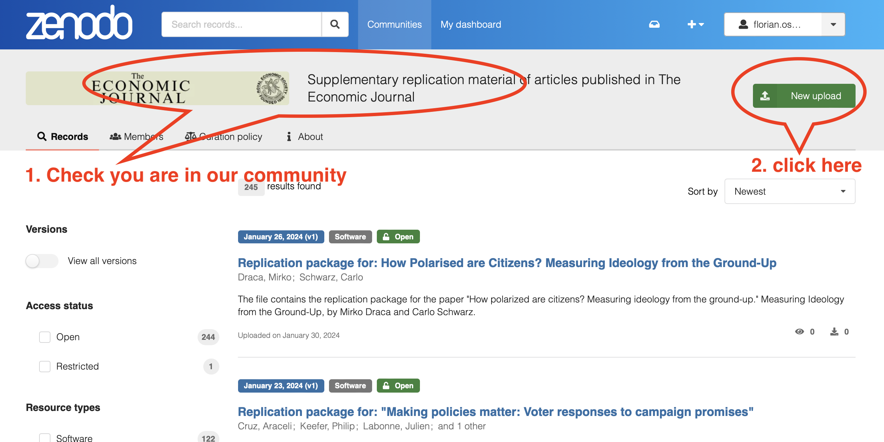
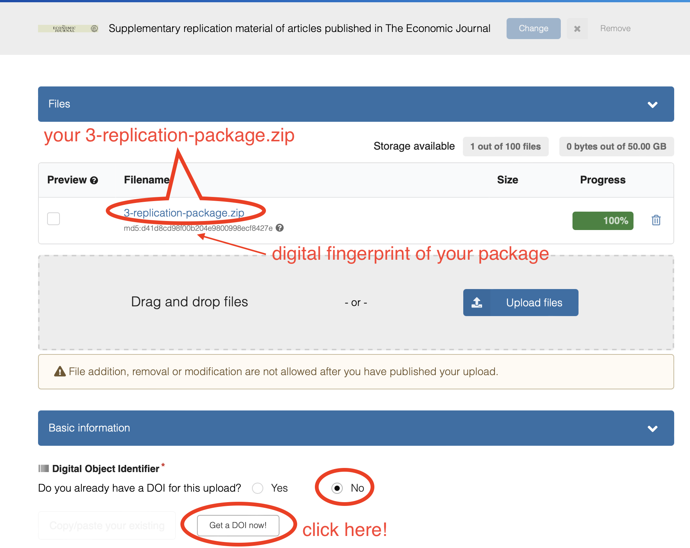
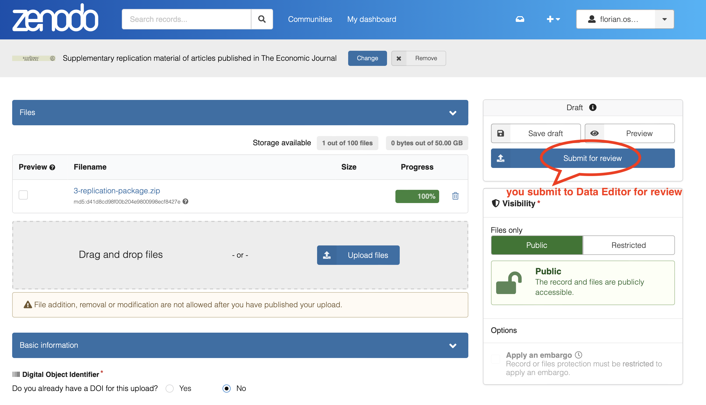

Prepare and Submit your Replication Package
After your Managing Editor conditionally accepts your paper (and before she sees your final response and proceeds to final acceptance) your paper will go through reproducibility and anti-plagiarism checks. It is important that you carefully follow the instructions below to ensure that your paper and your replication package are not mishandled. This page provides you with detailed information that will help you preparing your replication package. Read it carefully before you submit!
1 Preliminaries
You are requested to submit a single zip file with the following folder structure (please name your folders in this exact way! Notice there should be no spaces in folder names, and no capital letters). In short, the content of your zip file looks as follows:
├── 1-paper
├── 2-appendices
├── 3-replication-package.zip
└── 4-confidential-data-not-for-publication.zip (Optional)zip format!
- Both folder 3 and folder 4 are
ziparchives. - Only include folder 4 with restricted data if an exemption to the Data and Code Availability Policy has been granted to you and you are providing the replication team with temporary access to the data; all codes and unrestricted data should go to folder 3.
For folders 1 and 2, please refer to the Economic Journal’s General Instructions to Authors and Guide for Accepted Authors and carefully follow the instructions indicated there. In the lines below, you will find specific guidelines about folder 3 and, if you were granted a data exemption at the time of first submission (see here, here, and here for details), also folder 4.
Along with your package, you are requested to download, fill, sign and submit this checklist, which refers to the content of the package below
2 Contents of Replication Package
As indicated in the journal’s Data and Code Availability Policy all packages should include the following information:
- A
READMEfile in PDF format (README.pdf). We strongly recommend using this template. You may find in this web app a convenient tool to create yourREADMEfile. - The raw datasets used in the paper and online appendices, including a complete, transparent and precise documentation describing all variables. You can additionally provide the analysis data if this is helpful, but they are not required if the raw data are provided.
- If you were granted a data exemption at the time of first submission (see here, here, and here for details), you should either provide the replication team with temporary access to the data for the sole purpose of performing the reproducibility checks, or you should submit a synthetic/simulated dataset that allows running the code and produce all outputs in the paper and appendices, even if the results do not match those in the paper. If you can provide temporary access but you cannot share the data in the
4-confidential-data-not-for-publication.zipfolder, please contact the Data Editor at jpe.dataeditor@gmail.com to arrange an alternative access method. The content of this folder will be destroyed after the reproducibility checks are completed. All replicators and the Data Editor have signed confidentiality agreements that protect your submission. - Both the data cleaning codes and the analysis codes that produce all reproducible outputs reported in the article, appendix, and online appendices (including figures, tables, and numbers reported in the text). If some results are produced without scripts (e.g. ArcGIS maps), the
READMEfile should include step-by-step very detailed instructions on how to produce that output. In case of simulation/Monte Carlo studies, the authors are requested to set a seed so that the exact numbers that are reported can be obtained. - If data are provided in proprietary format (e.g. Stata’s
.dta), a copy of the data in non-proprietary format (e.g.ASCII,.csv).
Experimental papers should additionally include the following PDF documents (if these files are part of the paper or of an appendix, copy them again in a separate document and include them in the replication package):
- A document outlining the design of the experiment.
- A copy of the instructions given to participants, in both the original language and an English translation.
- Information on the selection and eligibility of participants.
- A PDF copy of the Institutional Review Board (IRB) approval of one of the authors’ institutions (IRB approval number, date, name of the institution) or an explicit mention that an exemption has been granted by the Editorial Board.
3 The README File
The README file should provide enough instructions so that all users (level of an advanced PhD student and above) can reproduce all the results in the paper in a reasonable amount of time and without problems. We strongly recommend using this template.You may find in this web app a convenient tool to create your README file. The minimum required information includes:
- A verbal description of the content of the package (datasets, programs, folders, etc.)
- Data Availability Statement: precise indications on how the data were obtained, including required registrations, memberships, application procedures, monetary cost, or other qualifications, and, if applicable, URL to download them (which is typically part of the data citation).
- The following Statement about Rights:
- Precise instructions on how to run the code.
- Indications on where each piece of output is saved or displayed. (See best practices below)
- Software requirements, including the software version and operating system used by the authors.
- All packages and libraries that need to be installed to run the code and a clear indication on how to obtain them.
- Expected running time (even if it is a few seconds). When relevant, include the hardware that the estimated time refers to.
- Data citations: all datasets used in the paper (with no exceptions) should be listed in the references section of the paper in the same way that we cite other papers, and a copy of these citations should appear in a dedicated section of the ReadMe file. You can find some examples here
4 Data Citations
All datasets used in the paper (with no exceptions) should be listed in the references section of the paper in the same way that we cite other papers, and a copy of these citations should appear in a dedicated section of the README file.
If the data used in the study is part of the replication package of another paper, both the paper and the replication package should be cited.
Even commonly used datasets should be cited (in fact, funding of public and private institutions that make datasets available, even the most widely used ones, crucially depends on data citations!).
More specific guidance, and examples, on data citations is available here.
5 Best Practices
We do not require you to adhere to a particular structure within your folders 3-replication-package.zip and 4-confidential-data-not-for-publication.zip, as long as the content is clearly structured. We recommend at a minimum to keep code, data and output separated. This and other tips for best practice on how to structure your package can be found here.
6 Submitting Your Package
You will be invited to submit your package via an upload link by the Data Editor. This invitation will be generated after you have submitted the following items via The EJ Editorial Express as a resubmission of your paper:
1-paper(see Section 1)2-appendix(see Section 1)- Signed and dated checklist.pdf
Notice that you will submit 1-paper and 2-appendix twice, once on Editorial Express to trigger the invitation link, and once as part of your replication package (see Section 1).
A few days after you submitted the package (in most of the cases, within two weeks) you will be contacted by the Data Editor with the outcome of the reproducibility checks, regardless of whether the checks were successful or there are modifications to be made. Please add jpe.dataeditor@gmail.com and ej_foswald@editorialexpress.com to your safe contacts to avoid that the Data Editor’s messages go to spam!
If you need to implement modifications of your package, you will be instructed to do so in the Data Editor’s response. You will iterate with the Data Editor until the reproducibility checks are satisfactorily concluded.
7 After the reproducibility checks are completed: publish your package!
Once the reproducibility checks are concluded, and upon invitation of the Data Editor, you will be requested to perform a final step: publish your replication package at the Economic Journal’s community of Zenodo. To do so, you need to do the following:
- Sign up here for a free zenodo account, if you don’t have one already.
- Go to the Economic Journal’s community of Zenodo at ?var:jpe.zenodo.
- Start a new upload within the community using the top-right green button in the below figure. 
- Upload the
zipcompressed version of your replication package (i.e. the exact same archive3-replication-package.zipyou sent us in your final iteration of the replication package). Drag-and-drop the zip file to upload it, as shown below. Make sure you only publish the replication package and not the paper or online appendices. Especially, do not publish the content of the4-confidential-data-not-for-publication.zipfolder! - After your upload completes, indicate that you do not have a DOI for this package already, but that you want to Get a DOI now! 
- Fill in the required metadata:
- Resource type: Software or Dataset (what you find more applicable).
- Publication date: leave the default today’s date.
- Title: Replication package for: “{full title of your manuscript}”.
- Authors: Typically the same authors as the manuscript, but you can add others who have contributed significantly to the code you are uploading, such as research assistants (in that case, you are making them coauthors of your replication package, but not of the paper).
- Description: write a full citation to your manuscript as a description of what the replication package contains.
- Use the default license Creative Commons Attribution 4.0 International
- Feel free to fill in any additional meta data, but nothing more is required from our side.
- Finally, click submit for review top right of the page, as illustrated in the figure below. This action will notify the Data Editor of your new upload. We will then check the digital fingerprint of your package against what we have on file, and accept your package into our community. 